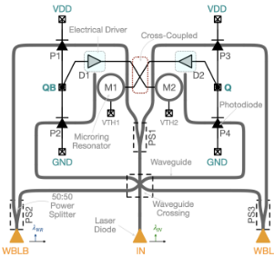
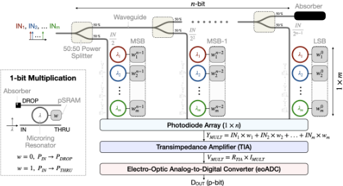
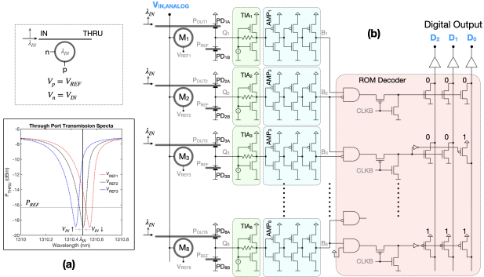
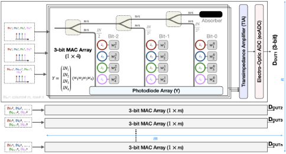
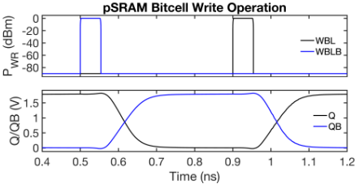
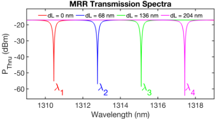
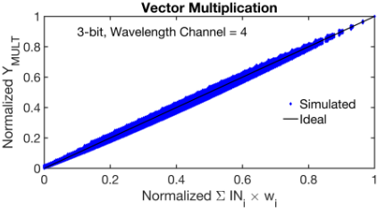
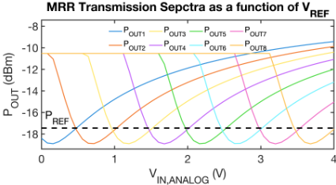
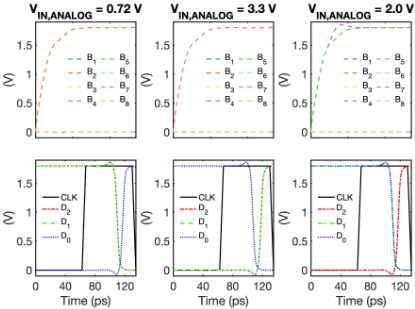
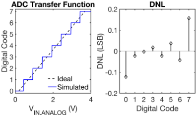

基于混合信号光子 SRAM 的高速高能效光子张量核心及新型电光 ADC
该论文针对 von Neumann 架构的数据搬运瓶颈及电学 SRAM/NVM 存内计算在串扰、写功耗与互连扩展性上的限制，提出基于差分光子 SRAM（pSRAM）位元的混合信号多比特光子张量核心，并配套新型 1-hot 编码电光 ADC（eoADC）在片内完成模拟结果数字化。方法上，以交叉耦合 MRR-光电二极管结构构成电光正反馈锁存器存储权重，经光频梳与 WDM 四波长通道在单波导内完成强度编码模拟输入与多比特权重的乘加，再由 MRR 谐振电压调制实现 1-hot 阈值量化。基于 GlobalFoundries 45SPCLO 单片硅光工艺的仿真显示，16×16 张量核心达 4.10 TOPS 与 3.02 TOPS/W，pSRAM 权重更新 20 GHz、每次切换 0.5 pJ，eoADC 采样 8 GS/s 且无失码。该工作属光子存内计算的电路/器件层方向，不含 RTL、UVM 验证或时序/物理实现内容，与团队存储/互连 IP 交付栈无直接交集，仅具前沿趋势参考价值。
传统 von Neumann 架构因处理器与存储器间频繁数据搬运面临 memory-wall 时延与功耗瓶颈；电学 SRAM 存内计算存在相邻位元串扰、read-disturb 与高功耗问题，NVM（RRAM/PCM/MRAM）存在写速度慢、写能耗高、耐久性有限或开关比低等缺陷；随工艺缩放，电学互连的耦合电容与金属电阻进一步恶化信号时延与噪声。此外，已有光子 IMC 宏依赖片外光功率测量、电学 ADC 或 DSP 做后处理，形成性能瓶颈。论文目标是构建高速、高能效、可扩展的矩阵乘法光子张量核心，并解决模拟计算结果的高效片内数字化问题。
三项核心技术：(1) 差分交叉耦合光子 SRAM（pSRAM）位元——由两个 MRR 与四个光电二极管构成电光正反馈锁存，在光偏置与电偏置下保持数据，通过差分光脉冲写入；(2) 混合信号多比特向量乘法核心——输入以光强模拟编码，经光频梳与 WDM 在单一波导内多波长并行传输，n 比特权重由 n 个 pSRAM 位元控制对应 MRR，经级联功率分配器实现二进制加权，光电二极管电流求和完成乘加，再经 TIA 与 ADC 数字化；(3) 1-hot 编码电光 ADC——利用 MRR 谐振波长随 pn 结电压调制的陷波特性，每个输入电压区间仅激活一个光电阈值模块，配合 ceiling 优先级 ROM 译码器输出码值，可时间交织扩展提速。整体基于 GlobalFoundries 45SPCLO 单片硅光工艺，通过 tiling 1×m 向量计算宏构成 2D 张量核心。
16×16 光子张量核心（3-bit 权重、768 个 pSRAM 位元、4 波长 WDM）计算吞吐 4.10 TOPS（1 operation = 3-bit 乘加），能效 3.02 TOPS/W
pSRAM 位元权重更新速度 20 GHz，每次切换能耗 0.5 pJ（-20 dBm 光偏置、wall-plug 效率 0.23）
3-bit eoADC 采样速度 8 GS/s（约 125 ps 时钟周期），传输函数码宽接近理想、无失码（无 -1 LSB DNL）；总光功率 7.58 mW、总电功率 11 mW
去掉级联放大器与 TIA 的 eoADC 版本工作在 416.7 MS/s，电功耗降低 58%
MRR 半径 7.5 µm、FSR 9.36 nm、波长间隔 2.33 nm，单波导内支持 4 个波长通道且串扰极小
相对已有工作：(1) 以差分交叉耦合 pSRAM 位元替代存在串扰问题的电学 SRAM IMC 或写延迟/写能耗高的 PCM 权重方案，支持多 GHz 权重更新（利于 in-situ training）；(2) 提出区别于温度计码 flash ADC 与时间交织 ADC 的 1-hot 编码 eoADC，每次转换仅激活单个阈值模块以降低功耗，同时保持 flash ADC 级速度；(3) 在 GlobalFoundries 45SPCLO 单片硅光工艺上实现含 ADC 的端到端光子张量核心，避免已有光子 IMC 宏依赖片外光功率测量、电学 ADC 或 DSP 后处理造成的瓶颈，与电学子系统无缝对接。
相关度级别：low
命中能力域：无明显对应
理由：论文属于光子存内计算/混合信号电路与器件层方向：核心贡献是 MRR 与光电二极管构成的光子 SRAM 位元、WDM 混合信号乘法宏和电光 ADC，验证手段为器件/电路级瞬态仿真与 ADC 传输函数/DNL 分析。全文不含可综合 RTL、UVM/SystemVerilog 验证平台、覆盖率、形式验证、STA/物理实现或 Emulation/FPGA 原型等内容，与团队 2.1~2.7 七个能力域（存储/互连 IP 架构、RTL 实现与低功耗、时序与物理实现、验证方法学、形式验证、仿真加速、验证自动化与 AI 辅助）均无实质交集。pSRAM 虽与团队的 SRAM 相关存储业务有字面关联，但其实现完全依赖硅光器件与模拟电路设计，不在团队数字 IP 交付栈内。
建议动作：仅了解结论
arXiv:2506.22705v1 [physics.optics] 2025年6月28日
人工智能（AI）、机器学习（ML）和大数据分析等数据密集型应用的快速增长，凸显了冯·诺依曼系统中的存储墙瓶颈：处理器与存储器之间频繁的数据传输降低了速度、带宽和能效 [1]。要解决这一问题，需要在硬件设计上进行转变，探索新的计算范式，在提升计算吞吐量的同时应对能耗与延迟问题。存内计算（IMC）就是这样一种方法，它让计算在存储器内部完成，从而最大限度地减少数据传输延迟 [2], [3]。其他新兴范式，如非易失性存储器（NVM）计算 [4]、光计算 [5] 和量子计算 [6]，也能够通过绕开传统系统的限制来提升效率。
基于SRAM的IMC宏具有无限耐久性以及与现有硅基代工厂兼容等优点，但也面临诸多挑战，例如在多行同时激活时相邻位单元之间的串扰，这可能导致读干扰错误和高功耗 [7]-[9]。诸如阻变存储器（RRAM）[10], [11]、相变存储器（PCM）[12], [13] 和磁阻随机存取存储器（MRAM）[14], [15] 等NVM器件具有非易失性和更低功耗等优点，但也存在局限。PCM 和 RRAM 存在读写速度慢（纳秒至微秒量级）、写入能耗高以及耐久性有限等问题 [11], [16]-[18]；而 MRAM 虽然速度更快，但其开关电阻比低，容易出错且热稳定性差 [16], [19]。此外，SRAM 和 NVM 两种方案都依赖于电互连，但随着工艺尺寸的不断缩小，这些互连面临严峻挑战，包括更高的耦合电容和增大的金属导线电阻，后者会加剧信号延迟和噪声问题 [20]-[23]。这些因素共同限制了数据吞吐量，并增加了高速高能效计算系统的能耗。
相比之下，光子系统利用波导来约束并引导光，有效应对了电互连所面临的扩展性挑战。这些系统通过采用精心设计的结构，利用全内反射、折射率导引或光子带隙等原理，实现了长距离低损耗的光数据传输 [24], [25]。此外，波分复用（WDM）通过在多个波长上同时传输数据（每个波长承载不同的信息），显著提升了计算效率、带宽和吞吐量 [26]。多种光子存内计算（IMC）宏通过将输入编码为光脉冲强度、并借助光的透射率或相位来控制权重，展现了超高速、高能效的运算能力 [27]-[35]。基于马赫-曾德尔干涉仪（MZI）的光子计算核虽然支持快速的权重更新，但其较大的器件面积限制了矩阵计算的可扩展性 [32]-[34]。相比之下，基于相变材料（PCM）的系统通过将透射率控制为权重而具备可扩展性；然而，其写入延迟和能耗较高，降低了在需要频繁更新的大规模应用中的效率 [28], [30], [31], [36]。基于微环谐振器（MRR）的光子张量核具有紧凑的占用面积，能够实现更高的集成密度和可扩展性，这对大规模矩阵计算核而言至关重要 [29], [35]。然而，MRR 易受热波动和环境波动的影响，这一问题可通过利用集成加热器进行热调谐以稳定工作条件而得到有效缓解 [37], [38]。因此，基于 MRR 的光子 IMC 系统能够提供高速、高能效、可扩展且紧凑的解决方案，推动面向需要频繁权重更新的大规模应用的光子计算的发展。
本工作提出了一种混合信号、多位、可扩展的差分光子SRAM嵌入式张量核心，利用工艺友好的硅光子器件实现高速、高能效的矩阵乘法以及高速存储器更新。本文还解决了光子存内计算（IMC）系统中的一个关键挑战——对计算所得模拟结果的高效后处理。许多光子IMC宏通常依赖于片外处理，例如光功率测量 [28]、[29]、[34]、电学模数转换器（ADC）[33] 或数字信号处理器 [30]，这些都会造成性能瓶颈，降低速度与能效。为克服这些局限，我们提出了一种新颖的单片光电模数转换器（eoADC）架构。与传统的高速Flash ADC [39]、[40]（其温度计码设计需要大量比较器激活，因而功耗极高）以及面临同步问题和高功耗的时间交织ADC [41]- [43] 不同，我们的eoADC采用了独热编码方法。该方法在每次转换中仅激活单个阈值模块，在保持Flash ADC级速度的同时将能耗降至最低。此外，该单切片设计还可通过时间交织配置加以扩展，进一步提升速度。通过将这种可扩展、高能效的eoADC集成到光子张量核心中，我们提供了一种与电学子系统兼容的无缝端到端架构，推动了面向大数据应用的大规模高性能计算。
本文的主要贡献如下：
Fig. 1 presents the schematic of the photonic SRAM (pSRAM) bitcell. In this configuration, M1-M2 are microring resonators (MRRs), P1-P4 are photodiodes (PDs), PS1PS3 are optical power splitters, and A1-A2 are passive optical absorbers to minimize unwanted reflections. An optical laser ( λ IN ) is connected to the input power splitter (PS1), which directs the power to the input bus waveguides of two identical MRRs (M1 and M2). The wavelength λ IN is selected to resonate with the MRRs when a voltage VDD is applied to them. The thru and drop bus waveguides of M1 (M2) are connected to the waveguides of photodiodes P1 (P3) and P2 (P4), respectively. The midpoints between photodiodes P1 and P2 (P3 and P4) are labeled as QB (Q), serving as the electrical storage nodes of the pSRAM. Node QB (Q) drives M2 (M1) through an electrical driver D1 (D2), creating a cross-coupled structure to hold the stored data. This arrangement forms a pSRAM latch capable of storing binary data at the storage nodes Q (data) and QB (complementary data) as long as both the optical bias (optical bias via IN) and electrical bias (VDD) are maintained. To retain data, the cross-coupled electro-optic structure must maintain stability. For instance, when Q = 1 (VDD) and QB = 0 (GND) are stored, these values must be preserved as long as the optical and electrical biases are applied. With Q = 1, M1 is tuned to resonance with λ IN , coupling most of the light to P2 via its drop port. This generates a higher photocurrent in P2, creating a lowresistance path to GND and keeping QB at 0. Conversely, QB = 0 shifts the resonance wavelength of M2 away from λ IN . This allows light to pass through M2's thru port to P3, maintaining a high photocurrent and keeping Q at VDD. The complementary states of M1 and M2, coupled with their respective photodiodes, create a positive feedback loop that maintains the stored data. The same mechanism applies in reverse to maintain Q = 0 and QB = 1, where M2 would be on-resonance and M1 off-resonance.

Data can be written into the pSRAM cell by applying differential optical power through the write bitline waveguides (WBL and WBLB). Starting with Q = 0 (GND) and QB = 1 (VDD), to switch the data to Q = 1 and QB = 0, higher optical power is supplied to the WBL waveguide while no power is given to the WBLB. The write optical power must exceed the input bias laser power for successful data flipping and can operate at a different/same wavelength, as photodiodes generally have a broadband response. This causes P3 (P2) to generate more current than P4 (P1), creating a low-resistance path to VDD (GND) for Q (QB), making Q rise to VDD and bringing M1 into resonance, and, QB drops to GND, stabilizing the state. The opposite state (Q = 0, QB = 1) can be written by reversing the optical power between the WBL and WBLB waveguides. More details about the structure and operation of the pSRAM bitcell can be found in [44].
Fig. 2 depicts the mixed-signal, multi-bit (n-bit) vector multiplication compute core, designed for vector-vector multiplication ( IN = [IN 1 , IN 2 , . . . , IN m ] × W=[w 1 , w 2 , . . . , w m ] ), where IN , w , and m represent the input vector, weight vector, and vector dimension, respectively. The core uses intensityencoded optical pulses as analog inputs and multi-bit (n-bit) pSRAM (detailed in Section II-A) for weight storage. In the 1-bit mixed-signal multiplication example in Fig. 2, each unit includes a MRR controlled by a pSRAM bitcell storage node representing a 1-bit weight (w). The MRR's wavelength is tuned such that, when w = 0 , the incoming light is coupled inside the ring, resulting in no output at the thru port (output = 0). Conversely, for w = 1 , the MRR is off-resonance, allowing the light to pass through the thru port. This mechanism enables the multiplication of the analog input ( IN ) by the binary weight ( w ), producing an output of 0 or IN based on the weight value.
The analog intensity-encoded vector can be generated using an optical frequency comb, which produces multiple precisely spaced wavelengths [30], enabling parallel data transmission through Wavelength Division Multiplexing (WDM). The input vector ( IN = IN 1 , IN 2 , . . . , IN m ) of size m is transmitted through a single bus waveguide via WDM, with each input intensity encoded at a different wavelength ( λ 1 , λ 2 , . . . , λ m ). For n -bit MAC operations, n pSRAMs are assigned to each weight, with weights organized by bit significance ( w 1 = w n - 1 1 w n - 2 1 . . . w 0 1 ), where w n - 1 1 is the most significant bit (MSB) and w 0 1 is the least significant bit (LSB). The analog inputs are distributed through n cascaded power splitters, generating binary-scaled input values ( IN 2 , IN 2 2 , . . . , IN 2 n - 1 ) [45].

The binary-scaled analog signals are multiplied using a 1-bit multiplication structure, which consists of a MRR driven by a 1-bit pSRAM. Each ring is tuned to a specific input wavelength by modulating its length, so each performs multiplication on a corresponding input. For instance, the red, blue, and green rings in Fig. 2 perform 1-bit mixed-signal multiplication on IN 1 , IN 2 , and IN m , respectively. WDM enables computing across multiple wavelengths within a single bus waveguide without crosstalk. The mixed-signal, wavelength-multiplexed multiplication results are combined within the waveguide and directed to a photodiode. The photodiode array, with n differential waveguides for n-bit multiplication, aggregates these signals to produce an output equal to the vector-vector multiplication of the analog inputs and n-bit weights. The results are then converted into digital bitstreams (p-bit) using a high-bandwidth transimpedance amplifier (TIA) and ADC.
Fig. 3(a) shows the transmission spectra of a two-port MRR, where the resonance state determines whether the thru port receives light. The transmission characteristics are modulated by applying voltage across the pn junction, which controls the refractive index. Three transmission spectra are shown, color-coded as red, black, and blue, corresponding to different applied voltages ( V REF1 > V REF2 > V REF3 ) at the p-terminal. In this simulation, V IN is set to V REF2 , with the resonance wavelength ( λ IN ) selected when V pn = 0 . At this condition, the MRR's thru port exhibits the lowest power at λ IN , shown by the black curve. When the applied voltage is V REF1 or V REF3 , the MRR remains off-resonance due to V pn > 0 or V pn < 0 , resulting in higher output power at λ IN ( > P REF ). As V IN increases beyond V REF2 , the spectra shift to longer wavelengths (red-shift), and when V IN reaches V REF1 , the blue curve aligns with the black curve, showing lower output power at λ IN . Similarly, decreasing V IN shifts the spectra to shorter wavelengths (blue-shift), with the blue curve aligning with the black curve, exhibiting minimum power. This demonstrates that by applying specific reference voltages at the p-terminal and connecting the input to the n-terminal of the pn junction, the MRR can selectively resonate at the input wavelength when V IN is close to the reference voltage, allowing for ADC quantization at a particular code value.

Leveraging the voltage-dependent notch-like response of the MRR thru port, we present a novel 1-hot encoding electrooptic ADC (eoADC) architecture, shown in Fig. 3(b). While the figure illustrates a 3-bit eoADC, the design is scalable to p-bit ADCs. This ADC converts an analog input voltage into 3bit digital electrical bitstreams, using light as the state variable for high-speed thresholding. For a 3-bit ADC, 8 (for p-bit, 2 p ) MRRs are used, with the n-terminals of the pn junctions connected to the input voltage and the p-terminals connected to different reference voltages. This ensures each MRR resonates within a specific input voltage range. For example, MRR M 1 exhibits minimal power at the thru port when the input voltage V IN , ANALOG is within 0 to V FS 8 , where V FS is the full-scale ADC input range. Other reference voltages are similarly set to align each MRR to resonate at a distinct input voltage range. By exploiting the transmission spectra and resonance wavelength modulation-governed by the applied voltage across the pn junction-the eoADC achieves 1-hot encoding behavior, distinguishing it from the thermometercoded approach typically seen in power-hungry flash ADCs.
采用平衡光电二极管结构作为光电阈值模块，其中下方光电二极管连接至参考光功率（P REF），上方各光电二极管则连接至各微环谐振器（MRR）的直通端口，每个 MRR 均经过校准，以在特定的输入电压范围内发生谐振。当某个 MRR 因输入电压而处于谐振状态时，其对应的上方光电二极管接收到的光功率低于下方光电二极管，从而使输出节点（Q p）向地放电。Q p 处的输出电压经过基于反相器的高速 TIA 和级联电压放大器进行放大，将电压变化转换为轨到轨摆幅 [46]。该放大后的信号（B p）被送入基于 ROM 的译码器电路，该电路在相邻通道之间实现向上取整函数，以实现快速的数字比特流转换。向上取整函数通过处理输入电压恰好位于两个电压范围中点的情形来确保鲁棒性，防止两个数字码同时被激活。这避免了静态电流流经译码器，从而提升了可靠性。当前的演示利用 GF45SPCLO 工艺节点中的 MRR 实现了 3 位 ADC；然而，通过优化器件（例如采用高 Q 值 MRR），或通过级联多个低位 ADC 并配合移位相加操作，可以实现更高的精度。此外，该 ADC 架构还可以采用时间交织结构进行集成，以提升工作速度。
图4展示了一种面向矩阵乘法设计的可扩展二维混合信号、多比特光子张量核架构，该架构通过平铺第 II-B 节所讨论的向量乘法计算核来实现。此计算核采用波分复用（WDM）进行混合信号乘法，因而需要精确的波长选择以及对 MRR 的精细调谐。一个关键的设计因素是 MRR 自由光谱范围（FSR）内可用的波长通道数量。例如，在 FSR 为 9 nm、通道间距为 2 nm 的情况下，最多可有效地使用四个波长通道而不会引起邻近通道干扰。根据 MRR 的传输特性，还可以进一步降低通道间距，以支持更多的波长通道。在本工作中，每个向量计算宏单元被分配四个波长 (λ1, λ2, λ3, λ4)，从而可实现 1 × 4 输入向量与权重向量的乘法。具体而言，输入元素 IN1、IN2、IN3 和 IN4 分别由调谐至波长 λ1、λ2、λ3 和 λ4 的 MRR 进行相乘，其控制由存储相应权重 w1、w2、w3 和 w4 的 pSRAM 位单元阵列提供。尽管图4展示的是 3 位权重精度，但可以通过增加更多的 MRR 和 pSRAM 位单元来提升精度。虽然每个计算核的波长数量会限制向量规模，但可以通过复制向量计算宏单元来扩展该架构，以处理更大的向量 (1 × m)。例如，要执行 1 × 16 的向量乘法，可以使用四个 1 × 4 向量计算宏单元，并通过光电二极管中的电流求和来获得结果。随后，这些结果使用电光模数转换器（eoADC）进行数字化，如第 II-C 节所述。将 1 × m 计算核复制 n 次，即可实现 m × n 阵列的乘法。


This section presents the verification results and performance metrics of the building blocks in our proposed photonic tensor core, simulated using the monolithic GF45SPCLO technology node.
为了配置权重值，通过写位线施加差分光脉冲，将数据 0 或 1 写入 pSRAM 位单元。在图 5 中，上方子图展示了输入到 WBL 和 WBLB 波导的光学写入激光，采用宽度为 50 ps、功率为 0 dBm 的写入脉冲。下方子图展示了存储节点 Q 和 QB 分别如何响应 WBL 和 WBLB 上的光输入；WBL（或 WBLB）上的写入脉冲会将 Q（或 QB）置为 1。图中还展示了数据翻转后稳定的（保持模式）Q 和 QB 状态。在输入与写入激光源具有 -20 dBm 光偏置和 0.23 的墙插效率（wall-plug efficiency）[47] 的情况下，pSRAM 在 20 GHz 的速度下每次翻转事件（权重更新）消耗 0.5 pJ 的能量。
在单个波导内实现基于波分复用（WDM）的乘法运算（如第 II-B 节所述）需要精确


地选择输入波长与谐振波长。该微环谐振器（MRR）的环半径为 7.5 µm，thruport 处的间隙为 200 nm，通过分别将环长调整 0 nm、68 nm、136 nm 和 204 nm，实现了四个不同的谐振波长（λ1、λ2、λ3 和 λ4）。凭借 9.36 nm 的自由光谱范围（FSR）和 2.33 nm 的波长间隔，可确保串扰极小。尽管通过减小波长间隔可以在 FSR 内容纳更多波长，但本工作聚焦于在同一波导内使用四个波长对四个输入进行乘法运算。
图 7 展示了两个 1 × 4 向量相乘的仿真结果，其中输入值由模拟光强表示，权重则采用 3 位 pSRAM 位单元进行编码。该仿真利用了四个波长通道，但 GF45SPCLO 工艺节点每次仅支持对一个波长进行仿真。为解决这一问题，每个波长通道均单独进行仿真，测试平台（testbench）中包含所有 MRR 以计入通道间串扰，然后通过光电二极管电流求和将各结果线性组合，以生成最终输出。理想情况下，归一化的光电二极管电流输出应与向量乘法结果线性吻合，仿真输出也遵循这一趋势，如图所示。
Fig. 8 shows the MRR thru-port transmission spectra ( P OUT , as in Fig. 3) of the electro-optic ADC. Each MRR ( M 1 to M 8 ) corresponds to a distinct reference voltage, creating dips in the transmission spectra within specific input voltage ranges. As the input voltage approaches a reference voltage,


the corresponding MRR generates a dip. For a given input code width (1 LSB of the ADC), only one transmission spectrum produces power lower than the reference, activating a single opto-electric thresholding block (1-hot encoding) as a function of the input voltage.
Fig. 9 shows the transient characteristics of our proposed eoADC for three input settings. The subplots in the top row indicate that for analog inputs of 0.72 V and 3.3 V, only one opto-electric thresholding block, followed by the TIA and amplifier ( B 2 and B 7 , respectively), is activated. The ROMbased decoder outputs the digital codes 001 and 110 , as seen in the bottom subplots. For an analog input of 2 V, two activations ( B 4 and B 5 ) occur since 2 V lies at the boundary between two adjacent codes. However, the ceiling priority ROM-based decoder correctly outputs 100 , demonstrating the accuracy, robustness, and reliable operation of our eoADC at a sampling speed of 8 GS/s ( ∼ 125 ps clock period).
Fig. 10 shows the simulation results of the ADC transfer function and differential non-linearity (DNL). The code width closely matches the ideal, with no missing codes (no DNL of -1 LSB). A 10 µ m radius MRR with a 250 nm gap was used to achieve 1-hot encoding, with 200 µ W input optical power at 1310.5 nm and 18 µ W optical reference power per channel. The ADC operates with 1.8 V analog and digital supply voltages. With a wall-plug efficiency of 0.23 [47], the total optical power is 7.58 mW, and the total electrical power is 11 mW. Eliminating the cascaded amplifiers and

| Reference | Throughput (TOPS) | Power Efficiency (TOPS/W) | Weight Update (Speed) |
|---|---|---|---|
| [33] | 0.12 | - | 60 GHz |
| [48] | 0.93 | 0.83 | < 0.5 GHz ∗ |
| [49] | 11.0 | - | 2 Hz † |
| [50] | - | 10 | ∼ 1 GHz ‡ |
| [51] | 3.98 | 1.97 | < 0.5 GHz ∗ |
| This Work | 4.10 | 3.02 | 20 GHz |
| Reference | Throughput (TOPS) | Power Efficiency (TOPS/W) | Weight Update (Speed) |
‡ PCM write speed
TIAs can reduce power consumption but results in slower speed, e.g., the eoADC without these components operates at 416.7 MS/s while consuming 58% less electrical power. In addition, optimizing the MRR's voltage modulation efficiency can improve bit precision and speed.
为了评估性能指标，本文对一个 16 × 16 光子张量核进行了分析，该张量核能够完成 16 次两个 1 × 16 向量之间的向量乘法。在 3 位权重精度下，该张量核集成了 768 个 pSRAM 位单元。四个波长通道被用于基于波分复用（WDM）的乘法运算，使得 4 个向量乘法核能够在每一行中同时处理 1 × 16 向量乘法。尽管微环谐振器（MRR）和光电探测器可提供高电光带宽以实现快速运算，但电光模数转换器（ADC）带来的延迟限制了整体速度。该张量核实现了 4.10 TOPS 的计算吞吐量（1 次运算 = 3 位乘法/加法）。能效的计算考虑了 pSRAM 位单元、混合信号乘法核、电光 ADC、跨阻放大器（TIA）[52] 以及 0.23 的激光器插墙效率 [47]，结果为 3.02 TOPS/W。表 I 比较了各种光子存内计算（IMC）宏的吞吐量、能效和权重更新速度。
总结而言，我们提出了一种新颖的混合信号、多比特、可扩展的光子SRAM增强型张量核，能够实现超快速、高能效的矩阵乘法运算。所提出的架构支持多GHz的存储器更新，适用于大规模数据集和原位训练。该架构利用工艺友好的集成硅光子学，采用 GlobalFoundries 的单片 45SPCLO 技术节点，可无缝集成到现有代工厂工艺中。此外，我们新颖的高速、高能效独热（1-hot）编码电光ADC架构实现了端到端的光子张量核，可与电子子系统无缝兼容。因此，借助光子学在速度、能效和带宽方面的优势，该架构为下一代高性能、以数据为中心的计算系统建立了稳健的平台。